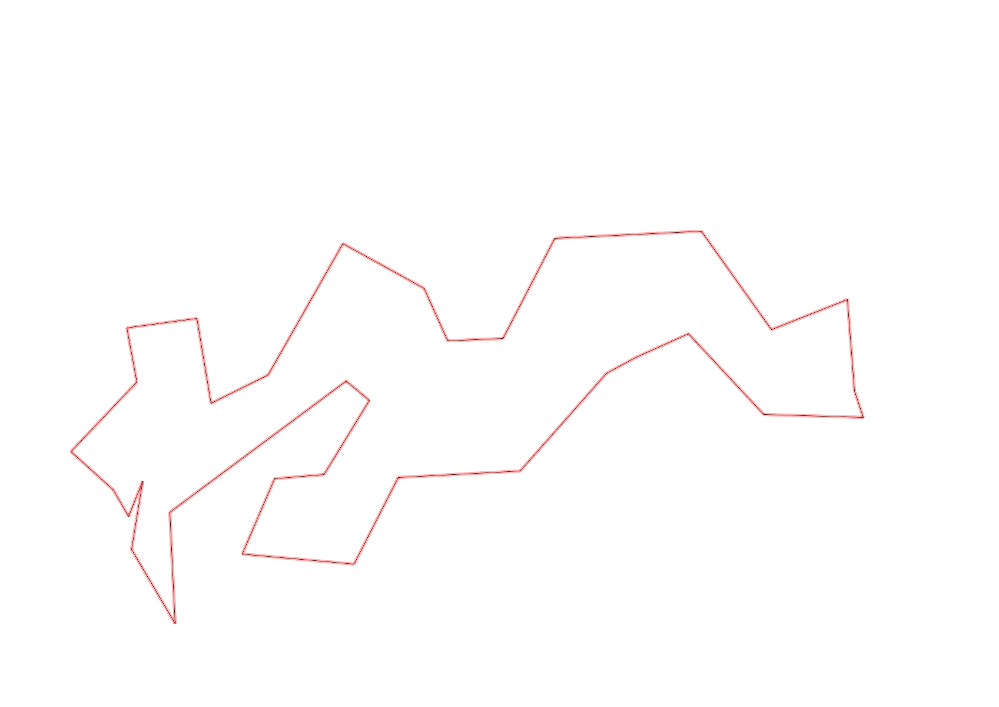
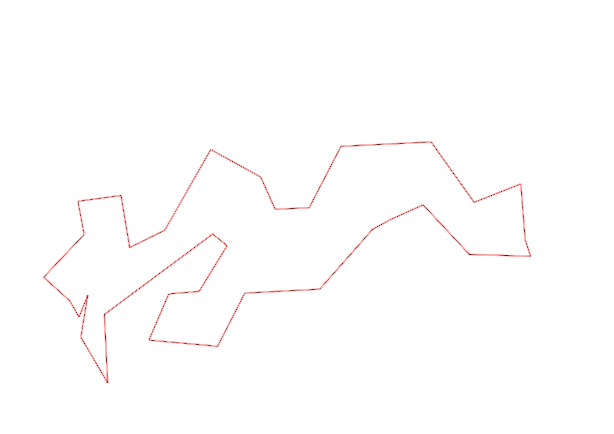

| Control |
Points |
Time Punched |
Distance |
Your Time |
Pace |
Place |
Fastest Time |
Median Time |
% Behind Fastest |
| 127 |
20 |
|
0.06 |
0:00:03 |
00:50 |
2 / 30 |
0:00:01 |
0:00:32 |
200% |
| 38 |
30 |
|
0.18 |
0:01:04 |
05:55 |
1 / 13 |
0:01:04 |
0:01:50 |
0% |
| 60 |
60 |
|
0.11 |
0:01:34 |
14:14 |
18 / 19 |
0:00:42 |
0:00:57 |
123% |
| 59 |
50 |
|
0.17 |
0:02:32 |
14:54 |
2 / 5 |
0:02:02 |
0:04:13 |
24% |
| 61 |
60 |
|
0.24 |
0:02:14 |
09:18 |
1 / 19 |
0:02:14 |
0:03:16 |
0% |
| 42 |
40 |
|
0.21 |
0:02:22 |
11:16 |
3 / 14 |
0:02:19 |
0:03:34 |
2% |
| 37 |
30 |
|
0.26 |
0:03:20 |
12:49 |
3 / 9 |
0:02:45 |
0:03:57 |
21% |
| 48 |
40 |
|
0.28 |
0:04:03 |
14:27 |
1 / 5 |
0:04:03 |
0:04:43 |
0% |
| 64 |
60 |
|
0.07 |
0:00:45 |
10:42 |
2 / 14 |
0:00:38 |
0:01:05 |
18% |
| 49 |
40 |
|
0.12 |
0:01:09 |
09:35 |
5 / 12 |
0:00:55 |
0:01:28 |
25% |
| 46 |
40 |
|
0.23 |
0:02:22 |
10:17 |
4 / 8 |
0:02:06 |
0:02:39 |
12% |
| 75 |
70 |
|
0.21 |
0:02:33 |
12:08 |
3 / 7 |
0:02:06 |
0:02:33 |
21% |
| 56 |
50 |
|
0.06 |
0:00:29 |
08:03 |
3 / 8 |
0:00:25 |
0:00:39 |
16% |
| 81 |
80 |
|
0.19 |
0:01:22 |
07:11 |
5 / 7 |
0:00:54 |
0:01:17 |
51% |
| 52 |
50 |
|
0.17 |
0:01:39 |
09:42 |
5 / 6 |
0:01:09 |
0:01:25 |
43% |
| 109 |
100 |
|
0.26 |
0:01:47 |
06:51 |
4 / 9 |
0:01:20 |
0:02:00 |
33% |
| 123 |
20 |
|
0.31 |
0:02:22 |
07:38 |
3 / 10 |
0:01:36 |
0:02:50 |
47% |
| 47 |
40 |
|
0.24 |
0:02:32 |
10:33 |
1 / 6 |
0:02:32 |
0:03:41 |
0% |
| 92 |
90 |
|
0.12 |
0:03:28 |
28:53 |
8 / 10 |
0:01:21 |
0:03:13 |
156% |
| 57 |
50 |
|
0.12 |
0:04:04 |
33:53 |
4 / 9 |
0:01:59 |
0:05:37 |
105% |
| 107 |
100 |
|
0.2 |
0:02:11 |
10:55 |
6 / 21 |
0:00:00 |
0:02:52 |
-% |
| 126 |
20 |
|
0.32 |
0:02:26 |
07:36 |
1 / 2 |
0:02:26 |
0:02:36 |
0% |
| 130 |
30 |
|
0.14 |
0:00:20 |
02:22 |
3 / 19 |
0:00:00 |
0:00:33 |
-% |
| 63 |
60 |
|
0.18 |
0:01:15 |
06:56 |
2 / 5 |
0:01:13 |
0:01:18 |
2% |
| 32 |
30 |
|
0.15 |
0:00:36 |
04:00 |
1 / 27 |
0:00:36 |
0:00:56 |
0% |
| 44 |
40 |
|
0.12 |
0:01:30 |
12:30 |
13 / 29 |
0:00:52 |
0:01:49 |
73% |
| 53 |
50 |
|
0.2 |
0:01:31 |
07:35 |
1 / 26 |
0:01:31 |
0:02:15 |
0% |
| 69 |
60 |
|
0.12 |
0:00:50 |
06:56 |
2 / 29 |
0:00:45 |
0:01:18 |
11% |
| 71 |
70 |
|
0.06 |
0:00:50 |
13:53 |
2 / 25 |
0:00:48 |
0:01:13 |
4% |
| 54 |
50 |
|
0.08 |
0:00:42 |
08:45 |
13 / 33 |
0:00:27 |
0:00:45 |
55% |
| 40 |
40 |
|
0.15 |
0:01:01 |
06:46 |
1 / 2 |
0:01:01 |
0:01:37 |
0% |
| 77 |
70 |
|
0.18 |
0:01:39 |
09:10 |
3 / 21 |
0:01:35 |
0:02:21 |
4% |
| 41 |
40 |
|
0.24 |
0:01:31 |
06:19 |
1 / 1 |
0:01:31 |
0:01:31 |
0% |
| Finish |
0 |
|
0.47 |
0:01:50 |
03:54 |
1 / 2 |
0:01:50 |
0:02:09 |
0% |
Total Distance Covered: 6.22km
Points Scored: 1680
Late Penalty: 0
Final Score: 1680
Total Time: 0hours 59minutes 56seconds
Efficiency: 270.1 points/km
 
